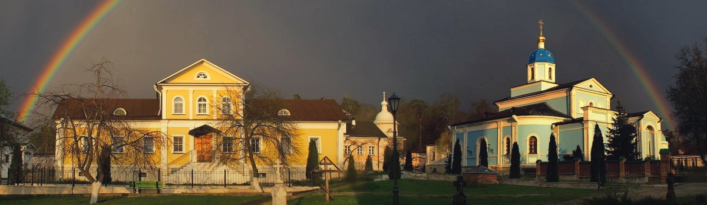
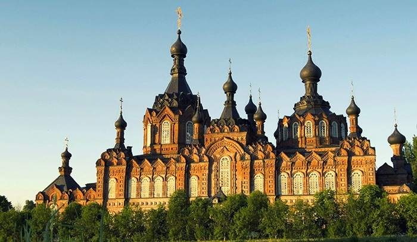
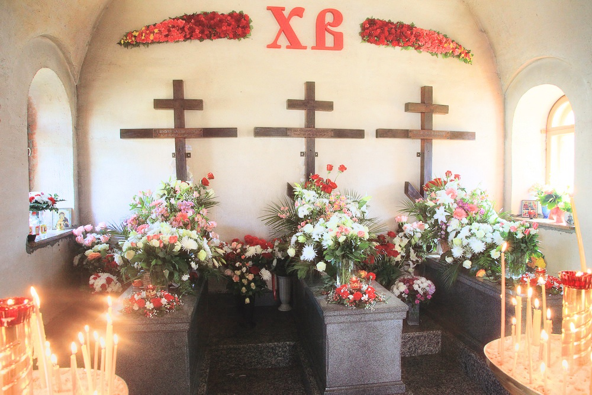

WhatsApp
WhatsApp 

На сайте вы вносите предоплату для бронирования, оставшуюся сумму доплачиваете перед посадкой.

Скидки
За каждую поездку вам начисляется +1% скидки (до 10%).
Не стесняйтесь приводить своих близких и знакомых — если вы заранее забронируете место на 2+ человек, то получите скидку в 10%!
О Добропуте
За последние четыре года несколько сотен человек вместе с нами посетили самые главные места русского православия.
Мы также работаем с церковными приходами и организованными группами.
Отзывы о поездках
Вы можете посмотреть отчеты о последних поездках на наших страницах в социальных сетях:
Мощи Оптинский старцев
Часовня убиенных монахов
Источник Пафнутия Боровского
Введенская Оптина Пустынь была основана в 14 веке раскаившимся разбойником Оптием. С тех пор обитель стала постепенно привлекать людей, желавших жить совершенной иноческой и христианской жизнью, на почве чего только и может расцвести такое редкое явление, как старчество. В этом же месте оно было настолько яркое и обильное, проявленное в такой череде святых подвижников, что более дюжины молитвенников из преемственных поколений получили наименование «Оптинских старцев».
В 19-20 веках Оптина Пустынь приобрела центральное духовное и смысловое значение для русской интеллигенции. В обитель совершали свои паломнические визиты такие философы, как Киреевский и Хомяков, Соловьев и Павел Флоренский, писатели Гоголь, Достоевский, Толстой и Есенин, а также множество выдающихся государтсвенных, военных и научных деятелей. Их живой опыт общения с Оптинскими старцами в дальнейшем повлиял и преобразил все культурное наследие России, из творчества мирских людей донеся эхо святоотеческой жизни до народного сознания.
В программу входят посещения кельи и могилки Матушки Сепфоры в Спаса Нерукотворной пустыни в Клыково, а также Шамординского монастыря.

Шамординский монастырь
Оптинские старцы
В 1829 году в Оптину пустынь, древний, но относительно скромный на тот момент монастырь, вернулся отец Леонид (Наголкин). До этого будущий преподобный успел пожить и в отшельничестве, и в скиту Валаамского монастыря, где вместе со строгой монашеской жизнью много времени уделял общению с мирскими людьми, ищущих наставления и утешения. Подобная практика, когда вначале инок на протяжении длительного периода ведет предельно аскетический образ жизни, уподобляясь древним святым отцам и следуя во всем их учениям, а затем возвращается из уединения в более открытую монастырскую жизнь для окормления страждущих получило название старчества. Несмотря на то, что подобное случалось на протяжении всей истории церкви, особенно ярко и отчетливо это явление проявило себя особенно в России, а одним из центров старчества стала именно Оптина пустынь.
Начиная с Льва Оптинского на протяжении ста лет здесь шла преемственность преподобных духовников. Святые окормляли как самых простых людей, общаясь с ними на простом и доступном народу языке, так и самым прямым и непосредственным образом возвращали в лоно церкви и оказывали решающие влияние на главных лиц мыслящей отечественной интеллигенции 19 века — писателей, как Гоголь, Достоевский и Толстой, философов славянофилов, как Киреевский и позже Владимир Соловьев. Помимо личного общения, старцы вели обильную переписку с людьми вне монастыря, причем зачастую душеспасительные наставления получали лица, ни разу не имевшие непосредственной живой встречи. Сборники этих писем, наряду с переводами творений древних святых отцов, начатых преподобным Макарием Оптинским, сегодня составляют драгоценнейшее наследие того времени.
Оптинские старцы были почитаемы как прозорливцы и чудотворцы еще при жизни, а в 2000 году были прославлены для общецерковного почитания.
НазадОптинские новомученики
На пасху 1993 года, после праздничной службы и причастия, в монастыре возле звонницы рукой человека, считающего себя сатанистом, были подло убиты три светлых инока — отец Трофим, отец Ферапонт и отец Василий. Все трое приняли монашеских постриг всего несколько лет назад, в самом начале 90ых, но были уже любимы послушниками и прихожанами, приобрели доверие у многих людей, которым в только что очнувшейся от атеизма стране нужно было живое христианское общение. Они вели простой и строгий аскетический быт, много трудились в монастыре, а отец Василий и за его пределами — он был талантливым проповедником, преподавал Евангелие в школах и в местах лишения свободы. Несмотря на то, что убиенная братия сегодня не причислена к лику святых и поэтому некорректно называть их новомучениками, тем не менее уже есть свидетельства чудес и исцелений по обращенным к ним молитвам.
 НазадБлижайшая поездка
∙ 23-24 сентября 2017 суббота ∙
1 день
08:00 отъезд
м. Юго-Западная
13:00 молебен прп. Амвросию
15:00 трапеза в монастыре
16:00 часовня убиенных монахов
17:00 вечернее богослужения
19:00 переезд в Клыково
2 день
09:00 литургия в Клыково
11:00 могилка мат. Сепфоры
12:00 трапеза
13:00 отъезд в Шамордино
13:30 Казанский собор и источник
16:00 отъезд
23:00 возвращение в Москву
м. Юго-западная
Цена
2000₽
+700₽
Проживание и питание
+250₽
Две экскурсии
Забронировать поездку
Здесь вы производите только бронирование — оставшиеся 2000₽ нужно будет заплатить непосредственно перед посадкой.
Если у вас есть какие-то вопросы, не стесняйтесь позвонить нам или написать WhatsApp на номер +7(909)907-15-59.
И чтобы не забыть — если вы заранее бронируете более 2 мест, то на каждое из них будет действовать скидка 10%! Для этого нужно в строчке "сумма" указать стоимость, умноженную на количество бронируемых мест (1900, 2850 и т.д.).
НазадСкидки
За каждую поездку вам начисляется +1% скидки (до 10%).
Не стесняйтесь приводить своих близких и знакомых — если вы заранее забронируете место на 2+ человек, то получите скидку в 10%!
О Добропуте
За последние 4 года несколько сотен человек вместе с нами посетили самые главные места русского православия.
Мы также работаем с церковными приходами и организованными группами.
Отзывы о поездках
Вы можете посмотреть отчеты о последних поездках на наших страницах в социальных сетях: